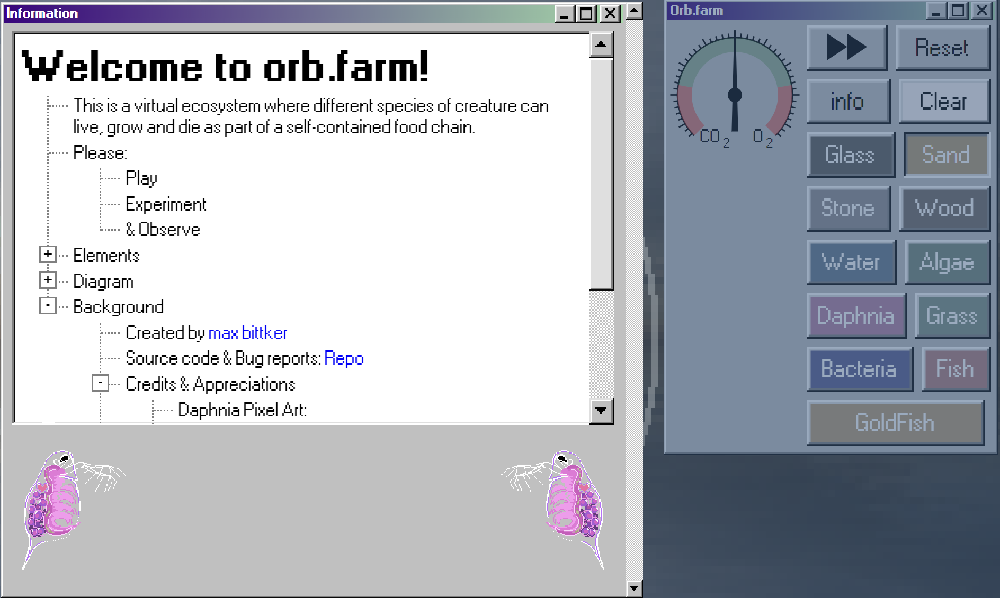

Week Two Questions:
Question 1: Spend two minutes with the experience and list all of your actions in granular detail.
- First thing I looked at the orb farm interface and buttons.
- Randomly click the buttons and drop into the tank and see how it happens.
- Press sand button to fill the jar and fill it with water.
- Use wood button to draw smile face.
- Try all button to find its function.
- Put a lot of fish, it really fun :))
- The first time I clicked on the Paphnia, Bacteria, algae buttons, I thought these buttons.
This button is for decoration but actually it has separate uses later on.
- Click reset button when my jar is not like im though.
- Spend of time to create works.
Question 2: What was the first thing you paid attention to when interacting with the experience?
The thing that caught my attention was the interface of the website, it was extremely
basic, simple, bring a sense of peace, simulating creativity. One thing that really cool
is how object interact with their surroundings such as glasses, fish, sun, etc.
 Question 3: What did you spend the most time engaging with?
Question 3: What did you spend the most time engaging with?
I spend most of my time trying out different elements like sand,
water, wood, etc and watching them interact with each other.
Also, I try to keep my fish alive.
Question 4: What was the most common action in your two minute interaction with the experience?
The most common actions are touch the screen, drop objects or elements, fast forward.
Question 5: What is your impression of the intended primary goal of the interactive experience?
I am impressed with the fact that they give interesting information about the elements to introduce as
well as educate the experiencers about knowledge surrounding the environment.

Question 6: How does the experience communicate it's primary goal?
To convey the main objective of this experience is to fill up the orb and then
observe what happens and arrange materials, plants, and animals inside a glass orb,
and they all live out their lives together as a little self-contained world.
In my opinion, this website allows everyone to freely, freely create and interact with them.
Question 7: What is your impression of the intended length of a single interaction and how often
you are intended to interact with the experience?
In my opinion, the interaction duration for this experience is quite long
like 15 minutes because it enjoys being curious, learning about the ingredients
and watching interact with each other. I think I will check the site once a week
to make sure my fish are alive, but if you leave it on long enough your interface will appear strange.
Week Three Questions:
Question 8: What metaphor or metaphors does the experience's mental model reference?
This site is a metaphor for keeping fish, and built an aquatic ecosytem in real place.
Brings the real experience of how to raise fish so that they do not have to die.
Moreover, metaphor for the actual effects of surroundings on the aquarium such as sun, bacteria, etc..
Question 9: What does this reference suggest about how you should feel and/or act when engaging with it?
This site made me curious about the elements and creating my own personal aquarium, and also a stress relief,
relaxation and art creation experience. However, I think this website wants users
to learn the information of the elements before using, but most of them ignore and understand them later.
Question 10: What is the most frustrating element of the interaction and what makes it frustrating to you?
TThe most vexing aspect of this reference is that there is no undo button; if I make a mistake, such as placing
or pouring the incorrect element into the jar, I cannot undo it.
Question 11: What is the most satisfying element of the interaction and what makes it satisfying to you?
I like how the website's pixel look and colour make everything simple and easy to interact with.
It leads to the elements falling down very comfortably.